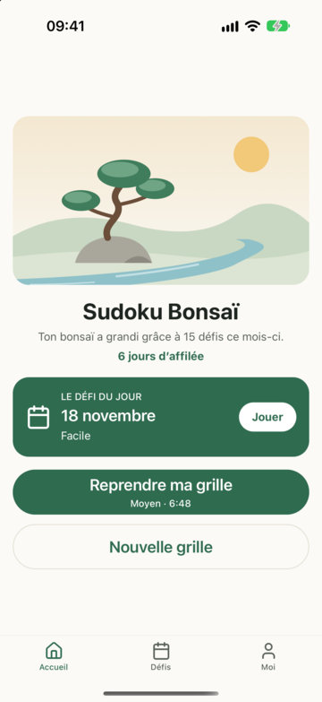
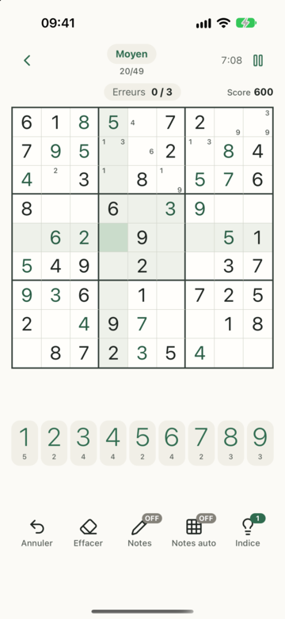

Sudoku Bonsaï
Un sudoku tout en douceur, au bord d'une rivière. Pour iPhone et iPad.


Le jeu
- 8 niveaux, de Découverte à Extrême ; chaque grille a une seule solution, trouvable par la logique.
- Un défi chaque jour, un calendrier, et un bonsaï qui grandit avec tes défis du mois.
- Des indices qui expliquent où regarder, notes et notes automatiques.
- Score, meilleurs scores, série de jours et statistiques par niveau.
- Aucun compte : tes parties restent sur ton appareil. Thème clair et sombre.
Gratuit grâce à une petite bannière publicitaire ; les vidéos ne s'affichent que si tu les choisis. Confidentialité · Assistance
In English
A calm sudoku by the river, for iPhone and iPad.
- 8 levels, from Discovery to Extreme; every grid has a single solution that logic can find.
- A daily challenge, a calendar, and a bonsai that grows with your monthly challenges.
- Hints that explain where to look, notes and auto notes.
- Score, best scores, day streak and statistics for each level.
- No account: your games stay on your device. Light and dark themes.
Free, supported by a small ad banner; videos only play if you choose them. Privacy · Support